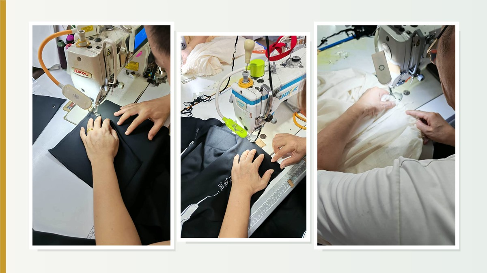
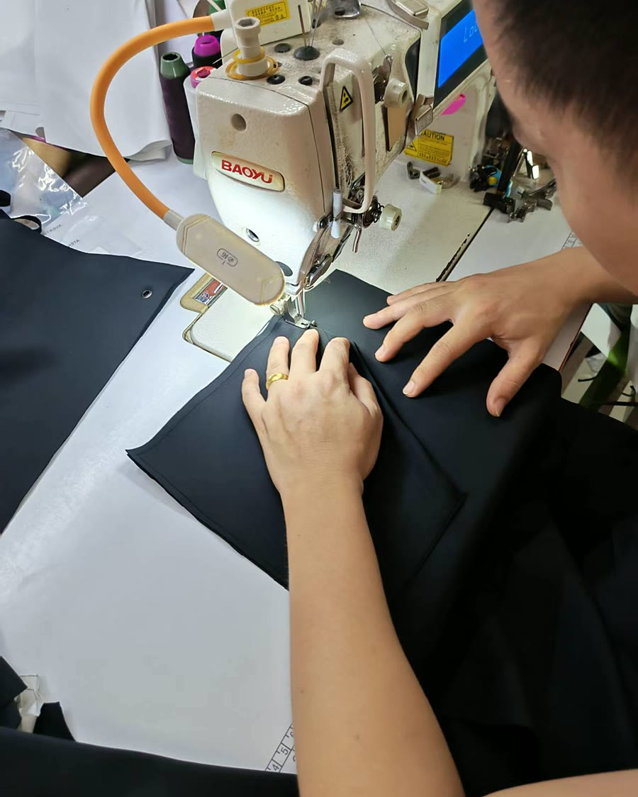
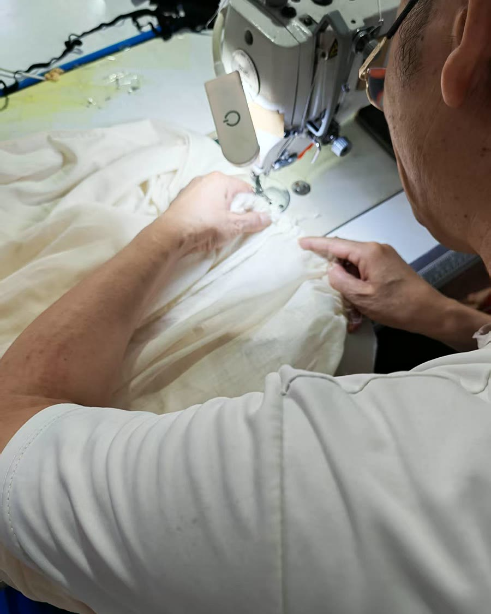
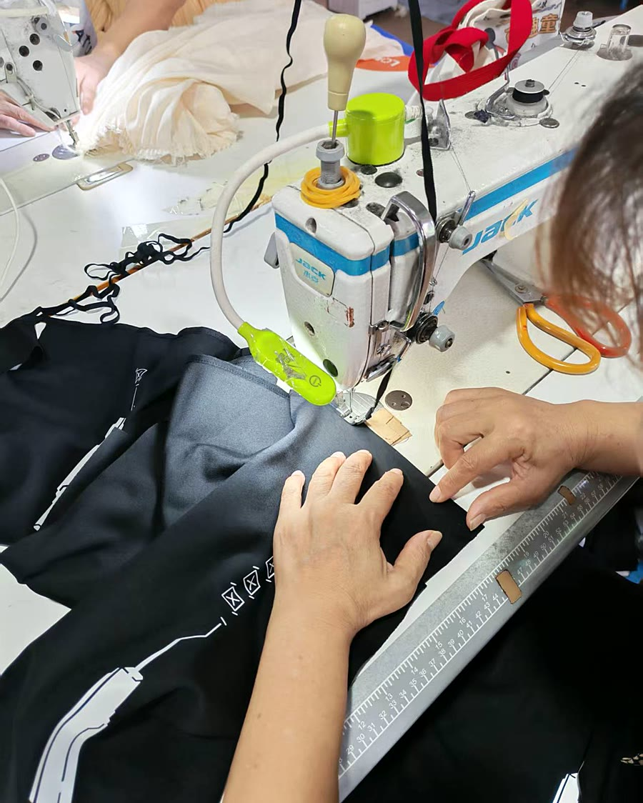
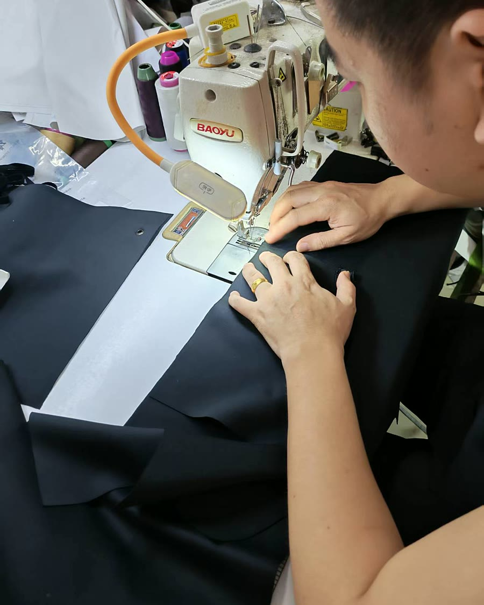

When Growth Starts, Production Gets More Sensitive
Most small fashion brands do not struggle at the very beginning. Sampling is slow, but manageable. Small runs feel personal. The founder, the pattern maker and the factory team are focused on making the first version work.
The pressure usually starts later, when one or two styles begin to sell consistently. Suddenly, the work is no longer just about making a beautiful garment. It is about repeating it with the same fit, hand feel, construction and delivery confidence.
For design-led European and contemporary labels, this stage can feel strangely quiet from the outside. There may be no dramatic design change. No new silhouette. No obvious technical problem. But the customer notices when a reorder feels slightly different from the piece they bought before.
The Part Many Brands Do Not Expect
At small scale, everything can feel stable. But once bestsellers are reordered, small differences begin to matter more. A knit can feel slightly tighter or looser. A satin fabric can catch the light differently. A fluid dress may not drape exactly like the first approved sample. A waistband can feel a little firmer. A size run may feel slightly off compared with the first batch.
Individually, these details seem minor. Together, they decide whether a style becomes a long-term bestseller or a one-season success.


Why This Matters for Soft Minimal Womenswear
Many growing labels today are built around a softer, more minimal wardrobe: relaxed knitwear, jersey essentials, fluid woven dresses, washed cottons, satin pieces, muted colors and understated shapes. This kind of product looks simple, but it is not simple to repeat.
These materials are beautiful because they are sensitive. They respond to dye lots, yarn tension, fabric finishing, washing, pressing and even the way operators handle seams during production. A clean design gives the factory less room to hide variation. The quieter the garment, the more visible the details become.
This is why repeat production stability is not only a factory issue. It is part of brand consistency. It protects the feeling customers associate with the label.
For brands inspired by European contemporary fashion, consistency is not about making garments look industrial. It is about protecting the subtle softness, proportion and ease that made the first style sell.
Scaling Is Not Only a Design Problem
When a brand begins to grow, it is natural to focus on marketing, wholesale accounts, photography, retail calendars and new collection ideas. But the real pressure often appears in production operations.
Best-selling pieces need to be repeated. Wholesale buyers expect stable reorders. Different markets expect the same product feel. Online customers compare new purchases with earlier pieces. Returns increase when small variations appear across batches.
At this stage, the production system matters more than the individual design. A strong factory partner should help the brand keep fabric, fit, workmanship and delivery expectations stable across repeat runs.
What Growing Brands Actually Need
Many brands assume they need a larger factory as soon as orders grow. In reality, what they often need first is a more controlled production structure.
- Controlled small batch production before scaling too quickly
- Clear repeat-order records for fabric, trims, measurements and finishing
- Consistent fabric sourcing across different production runs
- Stable grading and size control for reorder styles
- Quality checks that compare bulk production against approved samples
- A communication system that keeps development, costing and production aligned
Adding more factories can sometimes create more variation, not less. For a growing womenswear label, stability often comes from keeping the right production information close and repeatable.


How Cyncho Supports Repeat Production
Cyncho works with small and mid-size womenswear brands producing woven garments, knitwear, jersey styles and sweater collections for international markets. Our role is not only to make the first sample. It is to help brands build a clearer path from development to repeatable production.
We support low MOQ development for new styles, repeat production for best-selling pieces, fabric and trim sourcing, knitwear and woven consistency control, sample review, quality communication and production support for wholesale and DTC channels.
Because Cyncho operates a wholly-owned woven factory and works with invested knitwear and sweater factory resources, we can support brands that need both creative flexibility and practical production follow-through.
Before You Reorder a Bestseller
Before placing a repeat order, brands should review more than quantity. Check whether the original fabric is still available. Confirm whether the dye lot or yarn lot has changed. Compare the latest production sample against the approved sample. Review measurements after washing or pressing. Confirm trims, labels, packaging and inspection standards before bulk production begins.
This kind of work can feel slower at first. But it is what allows a successful style to remain successful.
If Your Brand Is at This Stage
If your label is starting to see strong-selling styles reordered across different channels, this is usually the moment when production structure matters most. The goal is not to make the brand bigger at any cost. The goal is to keep the product feeling like itself while the business grows.
Cyncho helps contemporary womenswear brands review sampling, sourcing, low MOQ production and repeat-order planning with practical factory communication. If you are preparing to repeat a best-selling style, send us your product details, quantity, fabric direction, size range and previous sample notes.
Explore our women clothing manufacturing, small batch production guide, private label clothing manufacturer and request a factory quote when your next reorder is ready.